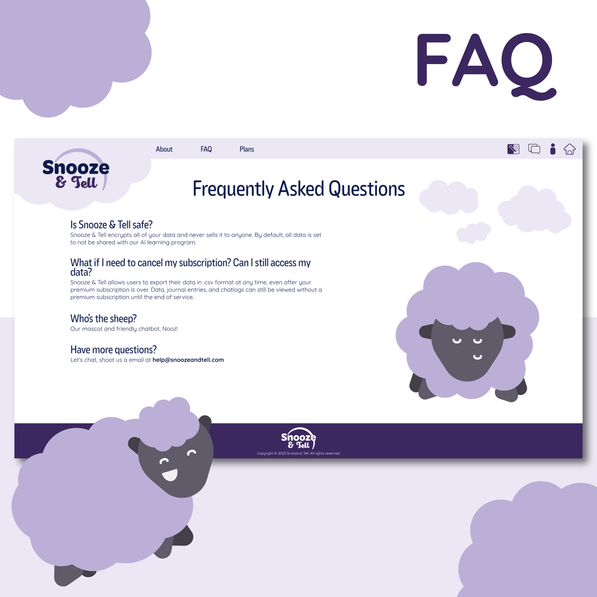
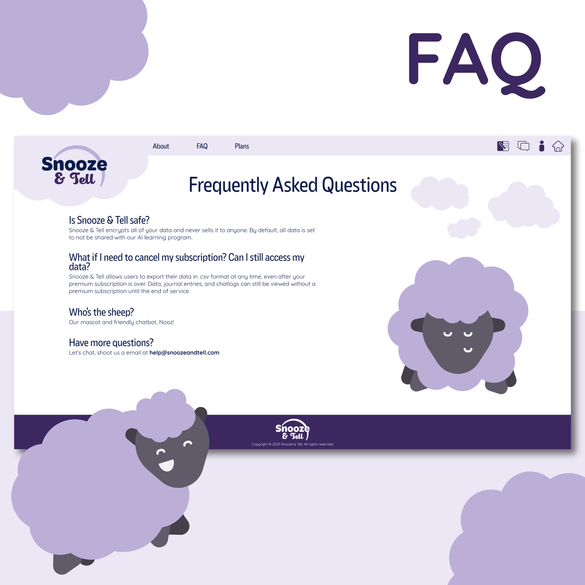

Snooze n' Tell
AI + Dreams...
"Snooze n' Tell" was a branding project for a mock company I envisioned. I was tasked with creating a brand guide, website concept, and logo.
The idea behind Snooz n' Tell was inspired by the AI "hype" in 2023. The basic idea was a service that offered AI-powered dream interpretations. The main problem I needed to solve as a designer that I immediately identified with this product was the users' lack of trust towards the technology. I needed an answer to the question, "Why would I trust a company with my dreams?".
The solution I developed can be broken down into three aspects: - Color palette - Usability - Mascot
I first chose a simple purple color scheme as it is the color most associated with sleep and tranquility. I then considered how exactly the user would input information. I decided on a chatbox because of its approachability.
Finally, I observed other application mascots and what their function was. Duolingo's "Duo" was an encouraging face; challenging and encouraging users to come back for more lessons each day. Microsoft's "Clippy" was used as a way to guide users through a brand new, somewhat scary technology at the time. Snooz n' Tell warranted a mascot character as it faced both "consistency" and "new technology" as it's challenges.

 
